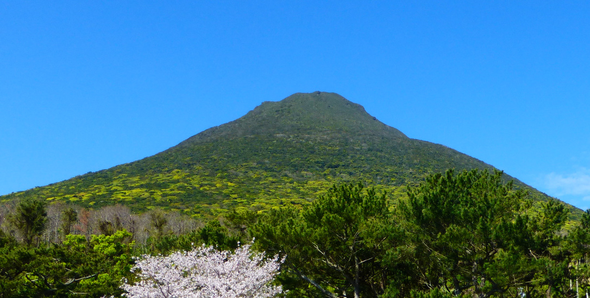
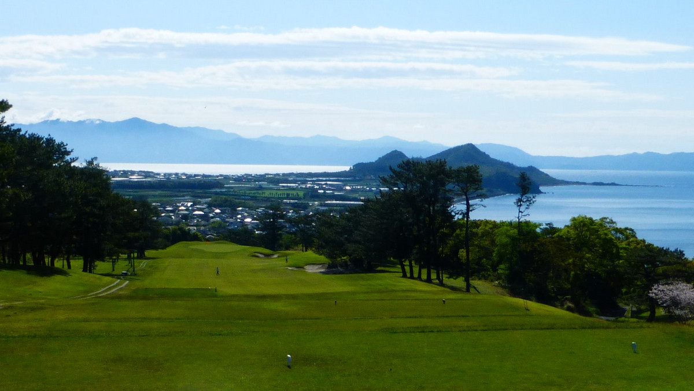

市の概要
鹿児島県指宿市は、鹿児島県薩摩半島の南端にある市です。
38,655人; （推計人口、2020年11月1日）
世界的に珍しい天然の砂蒸し温泉が有名で、
それを目的にする観光客も多い(サーチマンも行きした)。
また、開聞岳は、別名薩摩富士とも呼ばれ、
まさに指宿のシンボルと言うにふさわしい美しい山です。
鹿児島県指宿市は、鹿児島県薩摩半島の南端にある市です。
38,655人; （推計人口、2020年11月1日）
世界的に珍しい天然の砂蒸し温泉が有名で、
それを目的にする観光客も多い(サーチマンも行きした)。
また、開聞岳は、別名薩摩富士とも呼ばれ、
まさに指宿のシンボルと言うにふさわしい美しい山です。
指宿市には、超有名なゴルフ場があります。
いぶすきゴルフクラブです。
タイガーウッズもここでプレーしましたし、
2019年には日本プロゴルフ選手権が開催され、
石川遼選手が優勝しました。
開聞岳と
いぶすきゴルフクラブの写真です。
数年前、サーチマンが旅行に行って撮ってきました。
開聞岳です。
次は、いぶすきゴルフクラブです。
